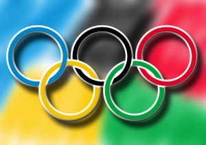
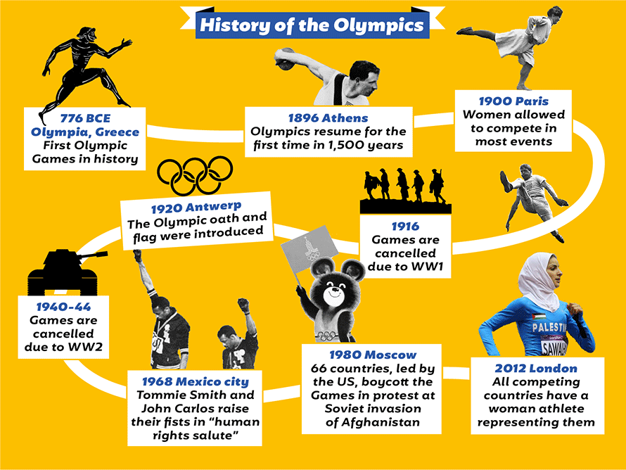
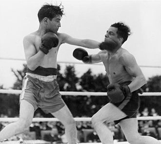
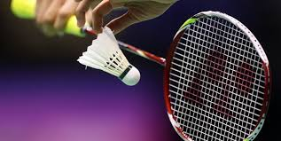
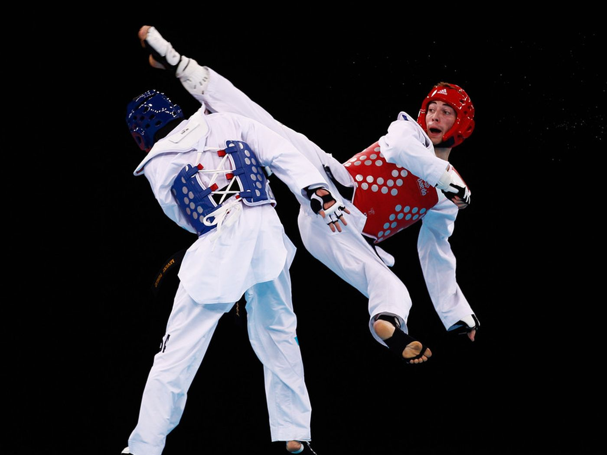
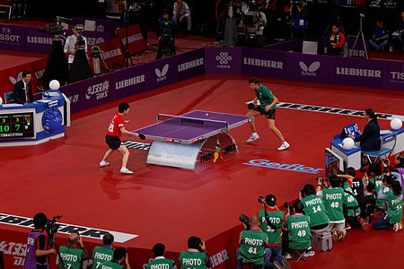
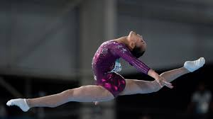
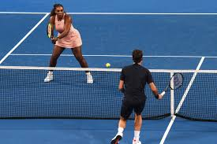
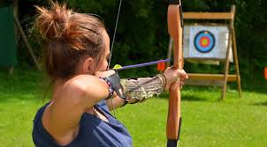

The Olympic Games is a quadrennial international multi-sport event celebrated as a global sports festival by people all over the world. The Olympic Games are held in both the summer and winter, with the ultimate goal of cultivating the people and world peace through sports.The evolution of the Olympic Movement during the 20th and 21st centuries has resulted in several changes to the Olympic Games. Some of these adjustments include the creation of the Winter Olympic Games for snow and ice sports, the Paralympic Games for athletes with disabilities, the Youth Olympic Games for athletes aged 14 to 18, the five Continental games (Pan American, African, Asian, European, and Pacific), and the World Games for sports that are not contested in the Olympic Games. The IOC also endorses the Deaflympics and the Special Olympics. The IOC has needed to adapt to a variety of economic, political, and technological advancements. The abuse of amateur rules by the Eastern Bloc nations prompted the IOC to shift away from pure amateurism, as envisioned by Coubertin, to the acceptance of professional athletes participating at the Games. The growing importance of mass media has created the issue of corporate sponsorship and general commercialisation of the Games. World wars led to the cancellation of the 1916, 1940, and 1944 Olympics; large-scale boycotts during the Cold War limited participation in the 1980 and 1984 Olympics; and the 2020 Olympics were postponed until 2021 as a result of the COVID-19 pandemic.
| HISTORY |

The Olympic Games, which originated in ancient Greece as many as 3,000 years ago, were revived in the late 19th century and have become the world’s preeminent sporting competition. From the 8th century B.C. to the 4th century A.D., the Games were held every four years in Olympia, located in the western Peloponnese peninsula, in honor of the god Zeus. The first modern Olympics took place in 1896 in Athens, and featured 280 participants from 13 nations, competing in 43 events. Since 1994, the Summer and Winter Olympic Games have been held separately and have alternated every two years.
The Olympics in Ancient Greece
The first written records of the ancient Olympic Games date to 776 B.C., when a cook named Coroebus won the only event–a 192-meter footrace called the stade (the origin of the modern “stadium”)–to become the first Olympic champion. However, it is generally believed that the Games had been going on for many years by that time. Legend has it that Heracles (the Roman Hercules), son of Zeus and the mortal woman Alcmene, founded the Games, which by the end of the 6th century B.C had become the most famous of all Greek sporting festivals. The ancient Olympics were held every four years between August 6 and September 19 during a religious festival honoring Zeus. The Games were named for their location at Olympia, a sacred site located near the western coast of the Peloponnese peninsula in southern Greece. Their influence was so great that ancient historians began to measure time by the four-year increments in between Olympic Games, which were known as Olympiads.
| INFORMATION |
1.ATHLETICS
Athletics is a group of sporting events that involves competitive running, jumping, throwing, and walking. The most common types of athletics competitions are track and field, road running, cross country running, and racewalking.
The results of racing events are decided by finishing position (or time, where measured), while the jumps and throws are won by the athlete that achieves the highest or furthest measurement from a series of attempts. The simplicity of the competitions, and the lack of a need for expensive equipment, makes athletics one of the most common types of sports in the world. Athletics is mostly an individual sport, with the exception of relay races and competitions which combine athletes' performances for a team score, such as cross country.
Organized athletics are traced back to the Ancient Olympic Games from 776 BC. The rules and format of the modern events in athletics were defined in Western Europe and North America in the 19th and early 20th century, and were then spread to other parts of the world. Most modern top level meetings are held under the auspices of World Athletics, the global governing body for the sport of athletics, or its member continental and national federations.
The athletics meeting forms the backbone of the Summer Olympics. The foremost international athletics meeting is the World Athletics Championships, which incorporates track and field, marathon running and race walking. Other top level competitions in athletics include the World Athletics Cross Country Championships and the World Half Marathon Championships. Athletes with a physical disability compete at the Summer Paralympics and the World Para Athletics Championships.
2.BOXING

Boxing is a combat sport in which two people, usually wearing protective gloves, throw punches at each other for a predetermined amount of time in a boxing ring.
Amateur boxing is both an Olympic and Commonwealth Games sport and is a standard fixture in most international games—it also has its own World Championships. Boxing is overseen by a referee over a series of one-to-three-minute intervals called rounds.
A winner can be resolved before the completion of the rounds when a referee deems an opponent incapable of continuing, disqualification of an opponent, or resignation of an opponent. When the fight reaches the end of its final round with both opponents still standing, the judges' scorecards determine the victor. In the event that both fighters gain equal scores from the judges, professional bouts are considered a draw. In Olympic boxing, because a winner must be declared, judges award the contest to one fighter on technical criteria.
While humans have fought in hand-to-hand combat since the dawn of human history, the earliest evidence of fist-fighting sporting contests date back to the ancient Near East in the 3rd and 2nd millennia BC. The earliest evidence of boxing rules date back to Ancient Greece, where boxing was established as an Olympic game in 688 BC.Boxing evolved from 16th- and 18th-century prizefights, largely in Great Britain, to the forerunner of modern boxing in the mid-19th century with the 1867 introduction of the Marquess of Queensberry Rules.
3.BADMINTON

Badminton is a racquet sport played using racquets to hit a shuttlecock across a net. Although it may be played with larger teams, the most common forms of the game are "singles" (with one player per side) and "doubles" (with two players per side). Badminton is often played as a casual outdoor activity in a yard or on a beach; formal games are played on a rectangular indoor court. Points are scored by striking the shuttlecock with the racquet and landing it within the opposing side's half of the court.
Each side may only strike the shuttlecock once before it passes over the net. Play ends once the shuttlecock has struck the floor or if a fault has been called by the umpire, service judge, or (in their absence) the opposing side.
The shuttlecock is a feathered or (in informal matches) plastic projectile which flies differently from the balls used in many other sports. In particular, the feathers create much higher drag, causing the shuttlecock to decelerate more rapidly. Shuttlecocks also have a high top speed compared to the balls in other racquet sports. The flight of the shuttlecock gives the sport its distinctive nature.
The game developed in British India from the earlier game of battledore and shuttlecock. European play came to be dominated by Denmark but the game has become very popular in Asia, with recent competitions dominated by China. Since 1992, badminton has been a Summer Olympic sport with four events: men's singles, women's singles, men's doubles, and women's doubles, with mixed doubles added four years later. At high levels of play, the sport demands excellent fitness: players require aerobic stamina, agility, strength, speed, and precision. It is also a technical sport, requiring good motor coordination and the development of sophisticated racquet movements.
4.TAEKWONDO

Taekwondo always requires wearing an dobok. It is a combative sport and was developed during the 1940s and 1950s by Korean martial artists with experience in martial arts such as karate, Chinese martial arts, and indigenous Korean martial arts traditions such as Taekkyon, Subak, and Gwonbeop. The oldest governing body for Taekwondo is the Korea Taekwondo Association (KTA), formed in 1959 through a collaborative effort by representatives from the nine original kwans, or martial arts schools, in Korea. The main international organisational bodies for Taekwondo today are the International Taekwon-Do Federation (ITF), founded by Choi Hong Hi in 1966, and the partnership of the Kukkiwon and World Taekwondo (WT, formerly WTF), founded in 1972 and 1973 respectively by the Korea Taekwondo Association. Gyeorugi ([kjʌɾuɡi]), a type of full-contact sparring, has been an Olympic event since 2000. The governing body for Taekwondo in the Olympics and Paralympics is World Taekwondo.In 1959 the Korea Taekwondo Association or KTA (then-Korea Tang Soo Do Association) was established to facilitate the unification of Korean martial arts. General Choi, of the Oh Do Kwan, wanted all the other member kwans of the KTA to adopt his own Chan Hon-style of Taekwondo, as a unified style. This was, however, met with resistance as the other kwans instead wanted a unified style to be created based on inputs from all the kwans, to serve as a way to bring on the heritage and characteristics of all of the styles, not just the style of a single kwan. As a response to this, along with disagreements about teaching Taekwondo in North Korea and unifying the whole Korean Peninsula, Choi broke with the KTA in 1966, in order to establish the International Taekwon-Do Federation (ITF)— a separate governing body devoted to institutionalizing his own style of Taekwondo in Canada.
5.TABLE TENNIS

Table tennis, also known as ping-pong and whiff-whaff, is a sport in which two or four players hit a lightweight ball, also known as the ping-pong ball, back and forth across a table using small rackets. The game takes place on a hard table divided by a net. Except for the initial serve, the rules are generally as follows: players must allow a ball played toward them to bounce one time on their side of the table, and must return it so that it bounces on the opposite side at least once. A point is scored when a player fails to return the ball within the rules. Play is fast and demands quick reactions. Spinning the ball alters its trajectory and limits an opponent's options, giving the hitter a great advantage.
Table tennis is governed by the worldwide organization International Table Tennis Federation (ITTF), founded in 1926. ITTF currently includes 226 member associations. The table tennis official rules are specified in the ITTF handbook. Table tennis has been an Olympic sport since 1988, with several event categories. From 1988 until 2004, these were men's singles, women's singles, men's doubles and women's doubles. Since 2008, a team event has been played instead of the doubles.
6.GYMNASTICS

Gymnastics is a sport that includes physical exercises requiring balance, strength, flexibility, agility, coordination, and endurance. The movements involved in gymnastics contribute to the development of the arms, legs, shoulders, back, chest, and abdominal muscle groups. Gymnastics evolved from exercises used by the ancient Greeks that included skills for mounting and dismounting a horse and from circus performance skills.
The most common form of competitive gymnastics is artistic gymnastics, which consists of for women (WAG), the events floor, vault, uneven bars, and beam. For men (MAG), it consists of the events floor, vault, rings, pommel horse, parallel bars, and horizontal bar. The governing body for gymnastics through out the world is the Fédération Internationale de Gymnastique (FIG). Eight sports are governed by the FIG, which include Gymnastics for All, Men's and Women’s Artistic Gymnastics, Rhythmic Gymnastics, Trampoline (including Double Mini-trampoline), Tumbling, acrobatic, aerobic and Parkour. Disciplines not currently recognized by FIG include wheel gymnastics, aesthetic group gymnastics, men's rhythmic gymnastics, TeamGym, and mallakhamba.
7.TENNIS

Tennis is a racket sport that can be played individually against a single opponent (singles) or between two teams of two players each (doubles). Each player uses a tennis racket that is strung with cord to strike a hollow rubber ball covered with felt over or around a net and into the opponent's court. The object of the game is to maneuver the ball in such a way that the opponent is not able to play a valid return. The player who is unable to return the ball will not gain a point, while the opposite player will.
Tennis is an Olympic sport and is played at all levels of society and at all ages. The sport can be played by anyone who can hold a racket, including wheelchair users. The modern game of tennis originated in Birmingham, England, in the late 19th century as lawn tennis. It had close connections both to various field (lawn) games such as croquet and bowls as well as to the older racket sport today called real tennis. During most of the 19th century, in fact, the term tennis referred to real tennis, not lawn tennis.
The rules of modern tennis have changed little since the 1890s. Two exceptions are that from 1908 to 1961 the server had to keep one foot on the ground at all times, and the adoption of the tiebreak in the 1970s. A recent addition to professional tennis has been the adoption of electronic review technology coupled with a point-challenge system, which allows a player to contest the line call of a point, a system known as Hawk-Eye.
Tennis is played by millions of recreational players and is also a popular worldwide spectator sport. The four Grand Slam tournaments (also referred to as the Majors) are especially popular: the Australian Open played on hard courts, the French Open played on red clay courts, Wimbledon played on grass courts, and the US Open also played on hard courts.
8.ARCHERY

Archery is the art, sport, practice, or skill of using a bow to shoot arrows.The word comes from the Latin arcus for bow. Historically, archery has been used for hunting and combat. In modern times, it is mainly a competitive sport and recreational activity. A person who participates in archery is typically called an archer or a bowman, and a person who is fond of or an expert at archery is sometimes called a toxophilite or a marksman.
The oldest known evidence of arrows comes from the South African site of Sibudu Cave, where the remains of bone and stone arrowheads have been found dating approximately 60,000-70,000 years ago. Based on indirect evidence, the bow also seems to have appeared or reappeared later in Eurasia, near the transition from the Upper Paleolithic to the Mesolithic. The earliest definite remains of bow and arrow from Europe are possible fragments from Germany found at Mannheim-Vogelstang dated 17,500-18,000 years ago, and at Stellmoor dated 11,000 years ago.
9.CYCLING
Cycling, also called bicycling or biking, is the use of bicycles for transport, recreation, exercise or sport. People engaged in cycling are referred to as "cyclists", "bicyclists", or "bikers".Apart from two-wheeled bicycles, "cycling" also includes the riding of unicycles, tricycles, quadricycles, recumbent and similar human-powered vehicles (HPVs).
Bicycles were introduced in the 19th century and now number approximately one billion worldwide. They are the principal means of transportation in many parts of the world.
Cycling is widely regarded as a very effective and efficient mode of transportation optimal for short to moderate distances.
Bicycles provide numerous possible benefits in comparison with motor vehicles, including the sustained physical exercise involved in cycling, easier parking, increased maneuverability, and access to roads, bike paths and rural trails. Cycling also offers a reduced consumption of fossil fuels, less air or noise pollution, and much reduced traffic congestion. These lead to less financial cost to the user as well as to society at large (negligible damage to roads, less road area required). By fitting bicycle racks on the front of buses, transit agencies can significantly increase the areas they can serve.